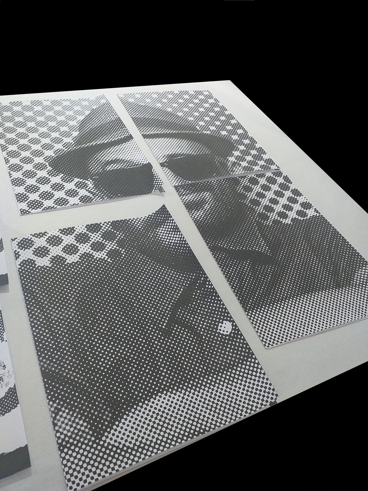
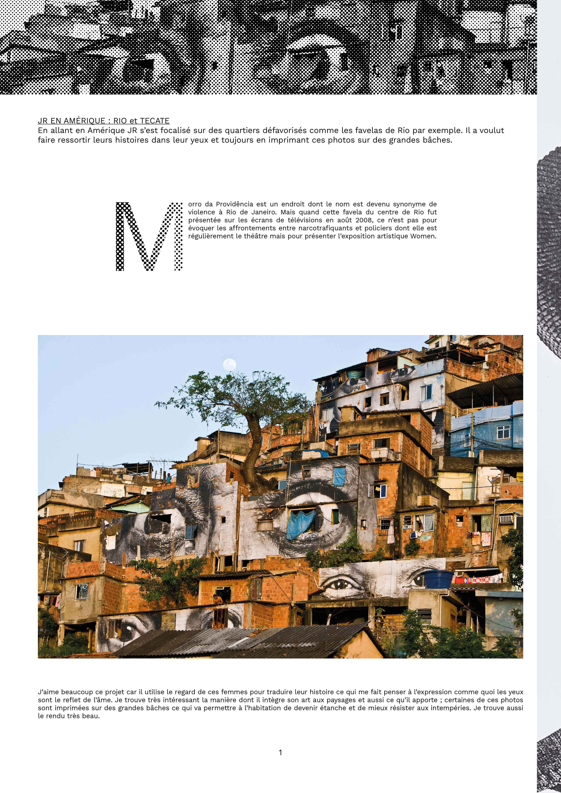
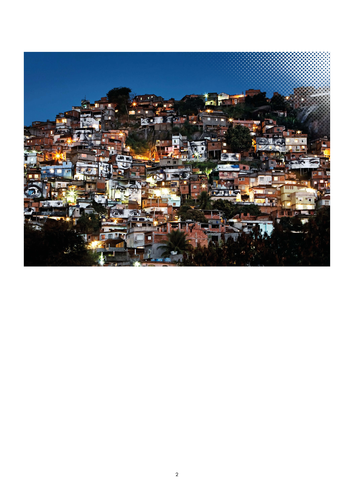
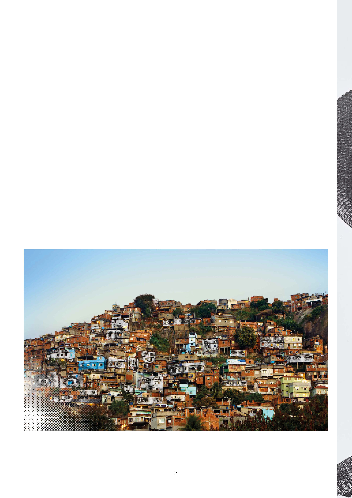
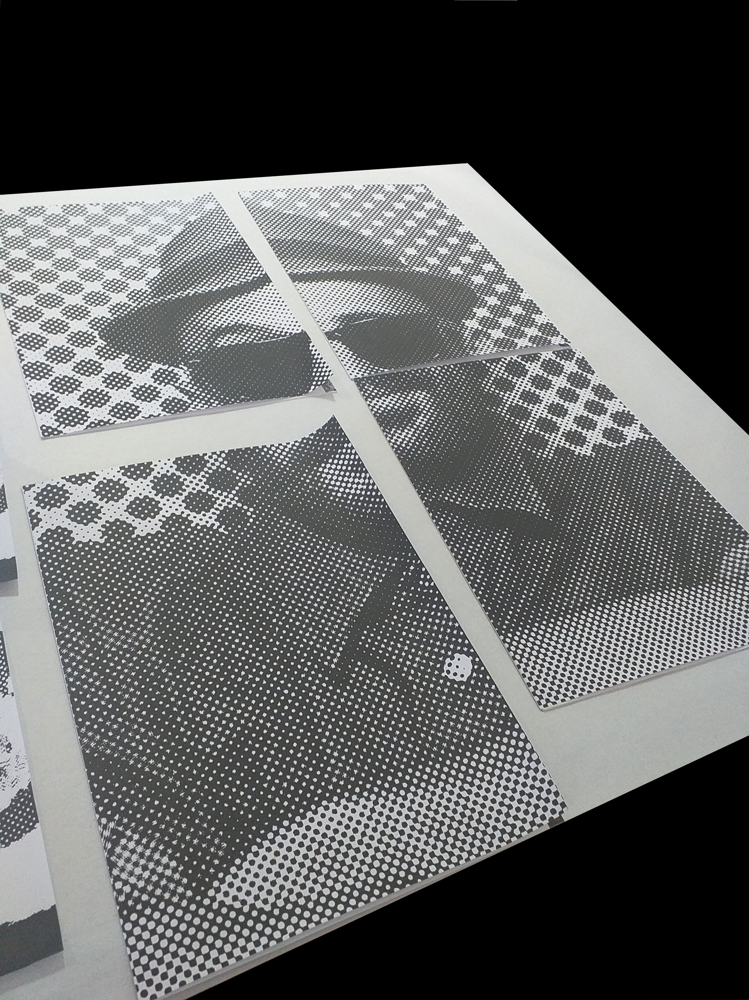
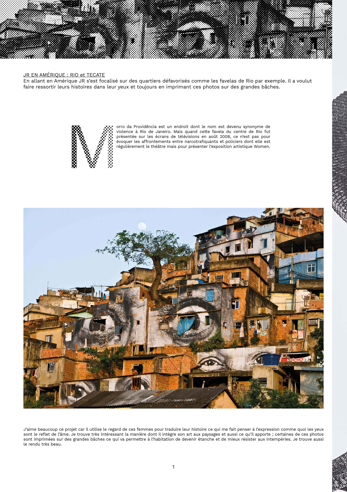
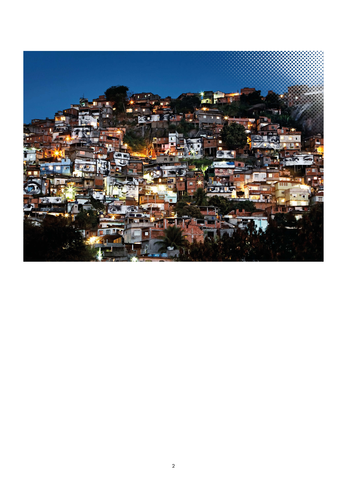
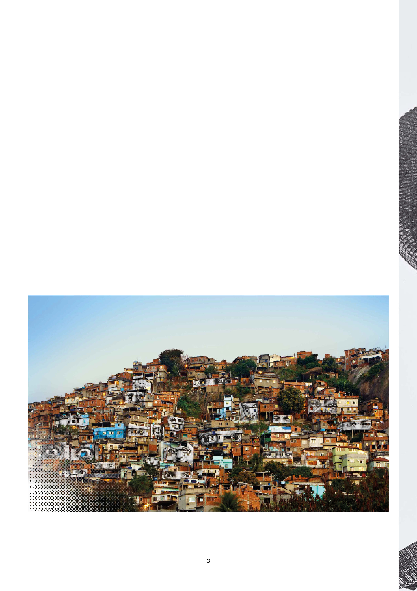

Pour ce projet de livre d’artiste il fallait choisir un artiste, analyser sont travail et le présenter dans plusieurs éditions.
Toutes les éditions devaient ensuite être rassemblées dans une boîte et accompagnées d’une affiche.
J’ai décidé d’étudier le travail de Jr qui est un artiste que j’ai toujours admiré pour son travail impressionnant et sensible.
Chaque édition possède en couverture une partie du visage de JR et présente les oeuvres qu'il a réalisé dans un pays.
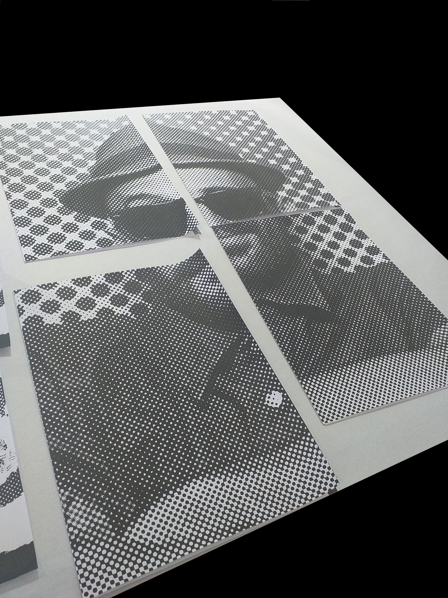
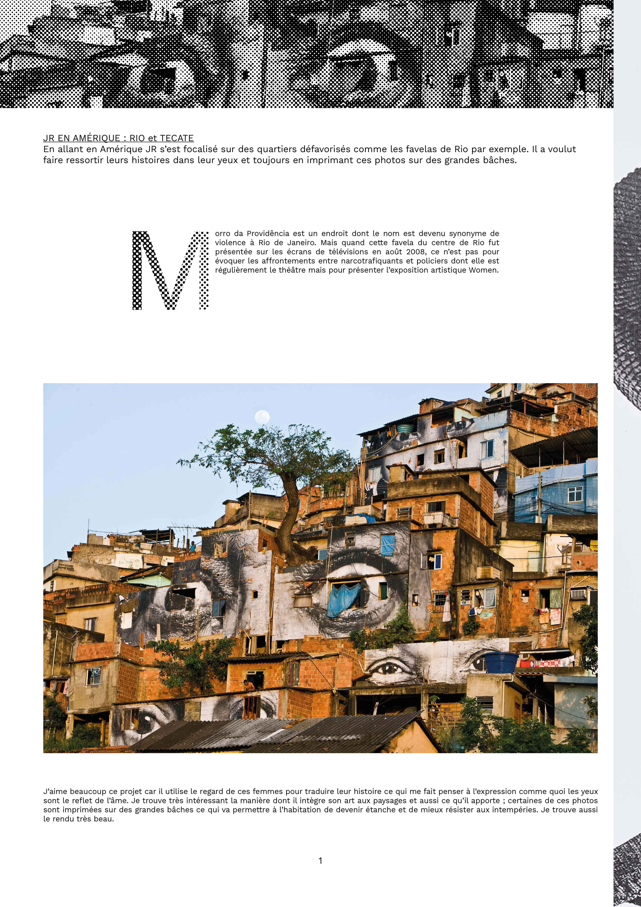
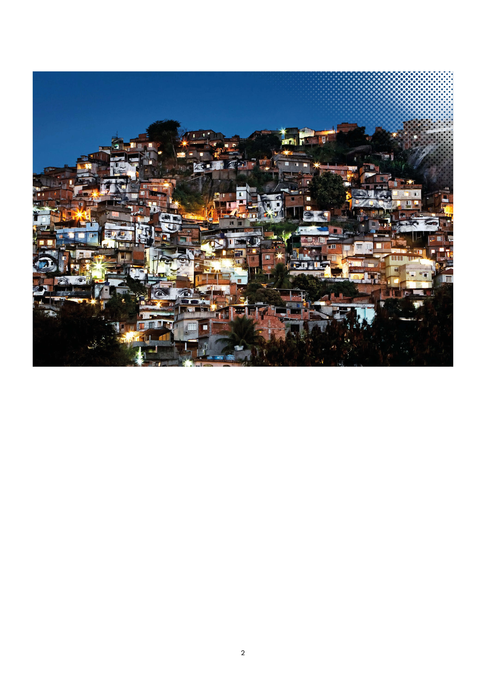
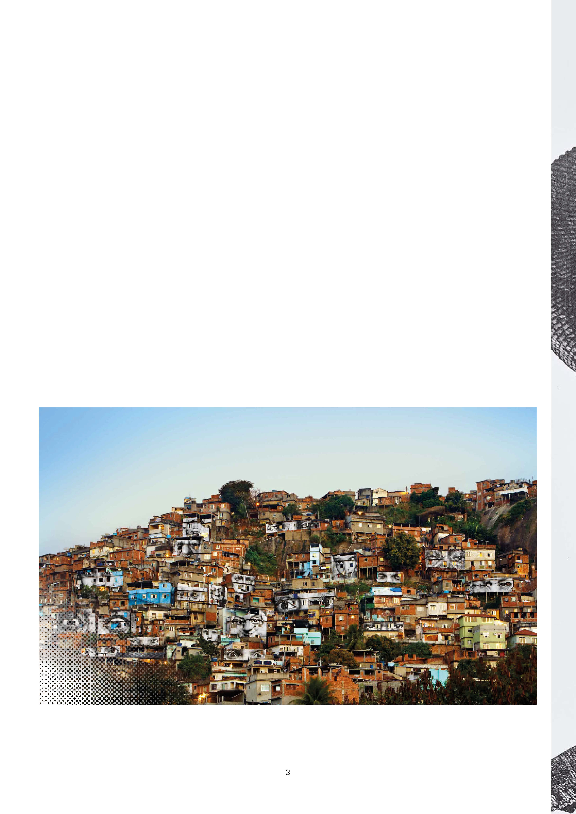